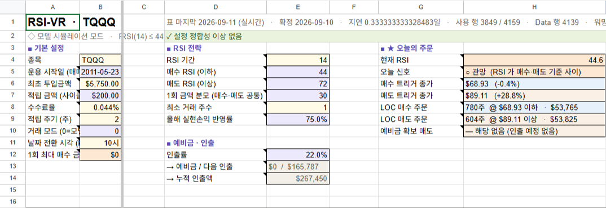
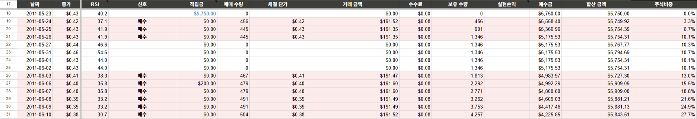

매수
RSI(14) ≤ 44
기준 이하인 날, 1회 금액만큼
종가(LOC)로 매수합니다. 투자 가능 현금(예수금 − 예비금)이 모자라면 있는 만큼만 삽니다.
이얀 RSI-VR · RSI 장기투자
RSI가 기준 아래면 사고, 위면 파는 장기투자 전략을 — 매일 시트를 읽어 종가(LOC)로 자동 실행합니다. 아바타와 독립된 별도 트레이(RSIVR.exe)로 동작합니다.
매일 종가 기준으로 RSI(14)를 보고, 기준 아래면 사고 위면 팝니다. VR러너는 원래 사람이 매일 손으로 하던 ① 신호·주문 확인 ② 종가 주문 접수 ③ 체결 확인·기록 ④ 적립·인출 환전을 전부 자동으로 처리합니다.
종가(LOC)로 매수합니다. 투자 가능 현금(예수금 − 예비금)이 모자라면 있는 만큼만 삽니다.
종가(LOC)로 매도합니다. 보유가 모자라면 있는 만큼만 팝니다. 그 사이면 관망(주문 없음).
평가금(시세)은 쓰지 않아 시세가 올라도 부풀지 않고, 폭락해도 매수 여력이 유지됩니다.
VR.exe, “이얀 VR V7” 시트)을 쓰던 분은 부록의 예전 VR에서 옮겨오기를 먼저 보세요. 옛 시트는 RSI-VR과 호환되지 않아 새 시트로 다시 준비해야 합니다.03·04는 아바타와 절대 같은 값을 쓰면 안 됩니다 — 같은 계좌(앱키)는 기동 시 즉시 차단되고, 같은 봇 토큰은 텔레그램 폴링 충돌(409)을 일으킵니다. 각 카드가 만들어 내는 값이 곧 설정 마법사에 입력할 항목입니다.
VR러너는 매수·매도 주문과 자금 상태를 시트에서 읽고, 체결·입출금을 시트에 기록합니다. 배포용 시트(“[시뮬] 이얀 RSI-VR”) 사본 만들기를 눌러 내 드라이브에 복사합니다.
1)로 전환아바타를 이미 쓰고 있다면 기존 서비스계정을 재사용할 수 있습니다 — 이 RSI-VR 시트 사본에 그 이메일을 다시 공유만 하면 됩니다.
client_email 을 시트에 편집자로 공유주문·조회·환전을 키움 REST API로 처리합니다. 아바타와 다른 별도 실전 계좌로 키를 발급받고 실행 PC의 IP를 등록합니다.
오늘 계획·출근 리포트·접수·체결 결과·환전 알림과 조회/일시정지 명령에 씁니다. 아바타와 다른 새 봇을 만드세요.
/newbot → 봇 토큰getUpdates (또는 @userinfobot)준비물 01에서 복사한 내 RSI-VR 시트 사본을 열어 Tracker 기본 설정을 내 운용에 맞게 바꾸고,
Trades 탭에 초기 입금 1줄을 적으면 시트 준비가 끝납니다. 사본은 모델 모드(B10=0)로 오니
실제 운용하려면 실거래 모드(1)로 바꿉니다.

A·B)·RSI 전략(D·E)·예비금·인출·★ 오늘의 주문(G·H). 배포 시트는 거래 모드 B10=0(모델)입니다.| 셀 | 이름 | 넣을 값 |
|---|---|---|
B4 | 종목 | 운용할 종목 티커 — 기본 TQQQ |
B5 | 운용 시작일 | 실제 운용을 시작하는 거래일(예: 오늘). RSI 준비용 가격(앞 250거래일)은 시트가 자동으로 받습니다 |
B6 | 최초 투입금액 | 처음 넣는 원금(USD) — 예(가상): $5,750. 1회 금액의 기준(연초 기준금액)이 됩니다 |
B7 | 적립 금액(사이클당) | 03장에서 설정 — 기본 $200, 음수면 인출 |
B8 | 수수료율 | 기본 0.044% — 그대로 |
B9 | 적립 주기(주) | 기본 2(2주마다) — 그대로 |
B10 | 거래 모드 | 반드시 1(실거래) — 복사 직후엔 0(모델)이라 꼭 바꿉니다 |
B11 | 날짜 전환 시각(KST) | 기본 10시 — 그대로(VR러너의 적립 환전 시각과 맞아야 함) |
B12 | 1회 최대 매수 금액 | 기본 $0(무제한) — 1회 매수를 제한할 때만 |
B10(거래 모드)과 B11(날짜 전환 시각)을 혼동하지 마세요. B11에 1을 넣으면 실거래는 켜지지 않고 날짜 전환 시각만 새벽 1시로 바뀝니다. B10이 0이면 마법사 입력 확인이 실패하고, VR러너 안전장치도 매일 주문을 막습니다.| 셀 | 이름 | 기본값 | 뜻 |
|---|---|---|---|
E4 | RSI 기간 | 14 | RSI 계산 기간(일) |
E5 | 매수 RSI(이하) | 44 | RSI가 이 값 이하인 날 매수 |
E6 | 매도 RSI(이상) | 72 | RSI가 이 값 이상인 날 매도 |
E7 | 1회 금액 분모 | 30 | 1회 금액 = 기준금액 ÷ 이 값(매수·매도 공통) |
E8 | 최소 거래 주수 | 1 | 이보다 적게 계산되면 주문하지 않음 |
E9 | 올해 실현손익 반영률 | 75% | 올해 번 돈을 1회 금액에 얼마나 반영할지 |
E12 | 인출률 | 22% | 정기 인출액 = 전년도 실현손익 × 이 값(03장) |
E4~E9)입니다 — 모델 모드 시뮬레이션 결과를 보고 조정하세요. E13·E14(예비금·누적 인출), ★ 오늘의 주문(G·H), 현재 상태(J·K), 백테스트 지표(M·N)는 전부 자동 계산이라 건드리지 않습니다.RSI-VR은 첫날 주식을 사지 않습니다. 원금을 현금(예수금)으로 넣어 두고, RSI가 매수 기준 아래로 내려오는 날부터 VR러너가 1회 금액씩 사 들어갑니다. 사람이 할 일은 원금이 들어왔다는 기록 1줄뿐입니다.
A:E는 매매 기록, 오른쪽 G:H는 입출금 칸입니다.G:H 첫 줄에 날짜 = 운용 시작일(B5), 입출금 = 최초 투입금액(B6)을 적습니다 — 예(가상): 2026-09-14 · 5750. 날짜는 Tracker 표 첫 행(18행) 날짜와 같아야 그날로 합산됩니다.A2가 “◆ 실거래 모드 — Trades 시트 기준”, D2가 “✓ 설정 정합성 이상 없음”이면 준비 완료입니다.
A:E 매매 기록, G:H 입출금. 오른쪽 K열에 시트가 적어 둔 사용법이 있습니다.A:E 수량·거래금액은 매수 양수, 매도 음수(거래금액은 수수료 제외) · G:H는 적립 양수, 인출 음수(같은 줄에 동시에 쓰지 않음) · 맨 아래에 이어서 추가, 날짜순이 아니어도 되고 같은 날 여러 건은 시트가 합산합니다. 실행 후에는 VR러너가 체결·적립·인출·잔고 정렬을 자동으로 기록하므로, 사람이 적는 것은 초기 입금과 러너 밖에서 직접 한 거래·입출금뿐입니다.A:E에 보유 주식을 매수한 것으로 1줄(수량·평단가·수수료 0·금액=수량×평단가), G:H에 주식 금액 + 현금 총액을 입금 1줄. B6도 그 총액으로 맞추면 표 첫 행의 보유 수량(J)·예수금(L)이 실제 계좌와 같아집니다.18행부터 하루 한 줄씩 날짜·종가·RSI·신호·적립금·매매 수량·체결 단가·거래 금액·수수료·보유 수량·실현손익·예수금·합산 금액·주식비중이 쌓입니다. 표의 마지막 행이 오늘이며(한국시간 10시에 날짜가 넘어갑니다), 실거래 모드에서는 Trades 탭의 실제 기록으로 계산됩니다.


J·K)와 백테스트 지표(M·N). 성과는 TWR(전략 자체 성과)을 B&H TWR과 비교하고, IRR은 내 돈의 실제 수익률, 합산 금액 + 누적 인출이 전략이 만든 총액입니다.Data 탭은 A1 셀의 GOOGLEFINANCE 수식이 시세 전체를 자동으로 채웁니다. VR러너는 이 값을 읽기만 하고 절대 쓰지 않으므로 손대지 말고 그대로 두세요.
#REF!로 무너집니다. 검증 띠 D2가 알려 주는 대로 메뉴를 쓰세요: “확정 데이터 지연”·“가격 데이터가 없습니다” → [RSI-VR] > 가격 새로고침 / “행이 부족합니다”·“Data 행이 표보다 많습니다” → [RSI-VR] > 표 다시 만들기(Trades 탭은 덮어쓰지 않습니다).정기 적립을 원하면 Tracker B7에 사이클(2주)당 적립금을 적고, 그 자금을 원화로 증권계좌에 자동이체해 둡니다 — 사이클이 시작되면 VR러너가 알아서 원→달러 환전해 넣습니다. 매년 5월에는 정기 인출이 있습니다.
B7| 셀 | 이름 | 넣을 값 |
|---|---|---|
B7 | 적립 금액(사이클당) | 부호가 방향을 정합니다 — 양수: 적립 주기(B9, 기본 2주)마다 넣을 금액(USD, 예: $200) / 음수: 그 절대값만큼 인출(달러→원) / 0: 환전 안 함 |
B5부터 B9주 간격).+금액, 인출은 달러→원 환전 후 −금액으로 자동 기록합니다.B7은 한 사이클(2주)치 적립금입니다. 환전 시점에 원화가 준비돼 있어야 하므로 매주 B7의 1/2을 원화로 증권계좌에 자동이체해 두는 것을 권합니다.
B7=$200(2주치) → 매주 $100어치 원화를 증권계좌로 자동이체./balance로 확인할 수 있습니다.B7 음수)은 원화 준비가 필요 없습니다 — 달러 예수금에서 원화로 환전됩니다.B7과 맞는지 확인하세요.매년 5월 마지막 수요일에 전년도 실현손익 × 인출률(E12, 기본 22%)을 인출합니다. 그 돈이 그날 준비돼 있도록 시트가 연초부터 예비금을 떼어 둡니다.
| 시점 | 시트 | VR러너 |
|---|---|---|
| 1월 1일 | 전년 실현손익 × 22%를 예비금 목표로 잡음 — 그만큼 예수금이 묶여 매수에 쓰이지 않음 | — (주문 금액이 투자 가능 현금 안에서 자동 계산) |
| 1~5월 | 매도로 들어온 현금이 목표까지 예비금으로 채워짐 | — |
| 인출일 이틀 전 | 목표에 못 미치면 H10 예비금 확보 매도에 부족분 매도를 안내 | 🏦 예비금 확보 매도 안내로 전달 — 자동으로 팔지는 않습니다(직접 매도) |
| 5월 마지막 수요일 | 예비금에서 인출액 차감, 이후 연말까지 전액 투자 | 오전 10시 이후 인출액만큼 달러→원 환전 → “💸 정기인출 … 환전 완료” |
RSI-VR은 설치 과정이 따로 없는 단일 실행 파일(RSIVR.exe)입니다. 아바타 트레이(Avatar.exe)와는
완전히 별개 프로그램이라, 같은 PC에 둘 다 설치해도 서로 독립적으로 동작합니다.
RSIVR.exe를 내려받습니다. 최상단 최신 릴리즈의 첨부 파일을 받으세요.
RSIVR.exe를 원하는 폴더(예: C:\RSIVR\)에 두고 더블클릭 — 처음 실행하면 앱을 내 PC(%LocalAppData%\VR\app)에 풀고 트레이를 띄웁니다.^(숨겨진 아이콘 표시)를 확인하세요. 모든 조작은 아이콘 우클릭 메뉴에서 합니다.시트 설정(특히 B10=1)까지 끝났으면, 트레이 우클릭 → “VR러너 추가…”를 누릅니다. 내 컴퓨터 안에서만 열리는 설정 페이지가 뜹니다 —
키·토큰은 붙여넣기 확인을 위해 평문으로 표시됩니다.
| 구역 | 항목 | 입력값 | 출처 |
|---|---|---|---|
| VR러너 | 이름 | 트레이에 표시될 계좌 이름 (예: RSI장기) | 자유 |
| 키움 | 앱키 | RSI-VR 전용 키움 App Key | 준비물 03 |
| 키움 | 시크릿키 | RSI-VR 전용 키움 Secret Key | 준비물 03 |
| 텔레그램 | 봇 토큰 | RSI-VR 전용 텔레그램 봇 토큰 | 준비물 04 |
| 텔레그램 | chat_id | 텔레그램 chat_id(숫자) | 준비물 04 |
| 구글 시트 | 시트 URL | 내 RSI-VR 시트 사본 주소 | 준비물 01 |
| 구글 시트 | 서비스계정 JSON | 다운로드(또는 재사용)한 JSON 파일 선택 | 준비물 02 |
B4 종목 · D2 검증 띠 · B10=1 실거래 모드) · 키움 토큰 발급 · 텔레그램 봇을 실제로 점검합니다./status로 확인할 수 있습니다.추가할 때 정한 이름은 나중에 바꿀 수 있습니다 — 표시 이름만 바뀌고 설정·데이터·자동 시작 여부는 그대로입니다.
VR러너는 30초마다 상태를 보며 미국 장 일정(prep → place → settle)을 따르고, 적립·인출 환전은 별도로 한국시간 오전 10시에 처리합니다. 한국시간은 미국 서머타임 기준이며 11월 초~3월 중순에는 1시간씩 늦어집니다. 조기 폐장일은 마감에 맞춰 자동으로 당겨집니다.
| 한국시간 | 단계 | 하는 일 |
|---|---|---|
| 10:00 | 적립·인출 | 시트 날짜가 넘어가면(B11) 사이클 시작 거래일이면 적립/인출 환전, 5월 마지막 수요일이면 정기 인출 환전 |
| 17:00 겨울 18:00 | prep 프리장 | 📋 오늘 계획 → 📊 출근 리포트(시트 POOL · 계좌 USD · 원화) → 차이가 있으면 🔧 POOL 정렬 → 해당하면 🏦 예비금 확보 매도 안내 |
| 04:00 겨울 05:00 | place 마감 60분 전 | 안전장치 통과 시 매수·매도 주문(각 최대 1건)을 종가 지정가(LOC)로 접수 → ✅ 접수 알림 |
| 05:10 겨울 06:10 | settle 마감 10분 뒤 | 체결분을 Trades 탭에 자동 기록 → 주문별 📊 결과 알림(체결/미체결) |
H6·H7)로 내놓으므로, 두 주문을 모두 걸어 두면 그날 종가가 넘어선 쪽만 체결되고 나머지는 저절로 사라집니다 — 장중 감시나 취소가 필요 없습니다.prep 때마다 시트 예수금(POOL, 표 마지막 행 L)과 계좌 달러 주문가능금액을 비교해, $0.01 이상 다르면 차액을 표 마지막 행 날짜로 Trades 입출금 칸에 부호 그대로 기록합니다(계좌가 많으면 +, 적으면 −). 수동 입출금·이자·환전 오차가 생겨도 시트가 계좌와 같아지고, 기록할 때마다 “🔧 POOL 정렬” 알림이 옵니다.
| 알림 | 언제 |
|---|---|
| 🚶 VR러너 출근했습니다 (… · v버전) | 기동·재시작·업데이트 후(실행 중인 버전 표시) |
| 📋 RSI-VR 오늘 계획(예정) | prep — RSI·신호와 오늘 걸 매수/매도 주문 |
| 📊 VR 출근 리포트 | prep — 시트 POOL · 계좌 USD · 원화 예수금 |
| 🔧 POOL 정렬 / ⚠️ POOL 자동 정렬 보류 | prep — 시트 POOL과 계좌 달러가 다를 때 |
| 🏦 예비금 확보 매도 안내 | 정기 인출 전 예비금이 모자랄 때(H10) |
| ✅ RSI-VR LOC 접수 / ℹ️ 오늘 접수한 주문 없음 | place — 접수 결과 |
| ⚠️ 주문 전 게이트 실패 / ⚠️ 주문 교차검증 실패 | place — 안전장치가 주문을 막았을 때(사유 포함) |
| 📊 RSI-VR 결과 | settle — 주문별 체결/미체결, 종가, Trades 기록 건수, 보유 수량 |
| 적립 … → Trades +금액 / 인출 … → Trades −금액 | 오전 10시 — 적립·인출 환전 성공 |
| 💸 정기인출 … 환전 완료 | 5월 마지막 수요일 — 정기 인출 환전 |
| ⚠️ … 환전 실패/거부 | 환전이 실패했을 때(매매는 계속) |
| ⚠️ 다른 기기가 리스를 가져감 / ⚠️ 감독자(VR 트레이) 소실 | VR러너가 안전하게 스스로 멈출 때 |
체결됐다면 ✅ 8주 체결 @ $68.85 · $550.80처럼 나오고, 기록 후 시트와 계좌의 보유 수량이 다르면 ⚠️ 보유 불일치 줄이 붙습니다.
준비물 04에서 등록한 내 대화(chat_id)에서 명령을 보내면 봇이 답합니다 — 먼저 /status를 보내보세요.
/status 응답 예시(가상)📅 2026-09-14 · ✅ prep · ⏳ place · ⏳ settle · 다음 작업: place(매수·매도 LOC 접수, 마감 60분 전)| 명령어 | 설명 |
|---|---|
/status | 오늘 날짜·단계 진행(prep/place/settle)·다음 작업 — 실행 확인의 핵심 |
/ladder | 오늘의 RSI·신호·매수/매도 LOC 주문(명령 이름은 예전 그대로입니다) |
/balance | 계좌 달러 예수금 · 원화 예수금 |
/pause | 자동 매매(주문 접수·적립/인출 환전) 일시정지 — 봇 응답은 계속 |
/resume | 일시정지 해제, 자동 매매 재개 |
/help | 전체 명령 목록 |
/pause는 새 자동 매매만 멈추고, 봇 응답과 다른 PC 중복 실행 방지는 계속 동작합니다.하나라도 걸리면 그날 주문을 모두 생략하고 사유를 알립니다. 애매하면 막는 쪽으로 설계돼 있습니다.
| # | 점검 | 통과 조건 |
|---|---|---|
| 1 | 시트 검증 띠 | D2 = “✓ 설정 정합성 이상 없음” |
| 2 | 실거래 모드 | B10 = 1 |
| 3 | 가격 신선도 | 시트의 확정 마지막 거래일이 직전 거래일 이후 |
| 4 | 보유 수량 | 시트 보유 수량 = 실제 계좌 보유 수량 |
| 5 | 예수금 | 시트 예수금과 실제 달러 예수금 차이 ≤ max(1%, $50) |
| 6 | 수량 한도 | 주문 수량 ≤ 설정 한도 |
| 7 | 금액 한도 | 주문 금액 ≤ 설정 한도 |
H8·H9의 주문이 트리거 가격(H6·H7)과 1회 금액 계산에 정확히 맞는지 다시 계산해 보고, 맞지 않는 쪽 주문만 빼고 접수합니다._Lock) — VR러너는 실행 중 시트의 _Lock 탭(처음 실행 때 자동 생성)에 “내가 실행 중”이라는 표시를 주기적으로 남깁니다. 다른 PC가 이 표시를 가져가면 원래 쪽이 자동으로 정지하고 알립니다 — 같은 계좌는 한 PC에서만 실행하세요.트레이는 실행 중인 계좌가 하나라도 있으면 종료되지 않도록 막혀 있습니다.
예전 VR(VR.exe, “이얀 VR V7” 시트, 사다리 매매)은 셀 배치와 전략이 달라 RSI-VR과 호환되지 않습니다. 아래 순서로 옮기세요.
RSIVR.exe를 받아 한 번 실행하면 새 앱이 설치되고 트레이가 RSI-VR로 바뀝니다(옛 트레이의 업데이트 창에서 [예]를 눌렀다면 이미 바뀌어 있습니다). 등록한 VR러너 목록은 그대로 남습니다. 옛 VR.exe는 더 이상 동작하지 않으니 지우세요. 옛 시트로 설정된 VR러너를 새 프로그램으로 실행하면 안전을 위해 매매·환전 없이 “RSI-VR 시트가 아닙니다” 알림을 보내고 멈춥니다 — 아래 단계로 옮긴 뒤 다시 실행하세요._Lock)가 서로를 못 봐 주문이 이중으로 나갈 수 있습니다.| 증상 | 확인 · 해결 |
|---|---|
| 트레이 아이콘이 안 보임 | 트레이의 ^(숨겨진 아이콘 표시)를 눌러 확인 |
| 실행 시 “PC 보호” 경고 | SmartScreen → 추가 정보 → 실행 |
옛 VR.exe를 실행하면 “앱을 준비하지 못했습니다” | RSI-VR로 업데이트된 PC입니다 — RSIVR.exe를 실행하세요(위 옮겨오기) |
| “이 VR러너의 시트는 RSI-VR 시트가 아닙니다” 알림 후 멈춤 | 옛 VR V7 시트로 설정된 VR러너입니다(매매·환전은 하지 않았습니다) — 위 옮겨오기대로 새 시트로 다시 등록 |
| “VR러너 추가…”가 비활성 | 이전 설정 마법사가 아직 열려 있음. 브라우저 탭을 닫고 잠시 뒤 재시도 |
| [입력 확인]에서 시트 레이아웃 실패 | Tracker 탭 · B4 종목 · D2 검증 띠 · B10=1(실거래 모드) 확인 |
D2 “실거래 모드인데 Trades 시트가 비어 있습니다” | Trades 탭에 초기 입금 1줄(02장)을 적었는지 확인 |
D2 “확정 데이터 지연” / “가격 데이터가 없습니다” | 시트 메뉴 [RSI-VR] > 가격 새로고침(러너는 Data를 쓰지 않습니다) |
D2 “행이 부족합니다” / “Data 행이 표보다 많습니다” | 시트 메뉴 [RSI-VR] > 표 다시 만들기 |
D2 “RSI 워밍업 거래일이 부족합니다” | 운용 시작일(B5)을 더 최근으로 옮기세요 |
| 게이트 실패 — 가격 신선도 미달 | 구글 시세에 전날 종가가 아직 안 들어온 것 — 보통 저절로 풀립니다. 며칠 계속되면 가격 새로고침 |
| 게이트 실패 — 보유 수량 / 예수금 불일치 | 체결·입출금이 Trades에 빠지거나 더 들어가지 않았는지 키움 내역과 대조해 고치세요 |
| “⚠️ POOL 자동 정렬 보류” | 시트와 계좌의 보유 수량이 다릅니다 — 빠진 체결(예: 마감 때 PC가 꺼졌던 날)을 키움에서 확인해 Trades A:E에 적으세요 |
| 결과 알림(📊 RSI-VR 결과)이 안 옴 | 그날 접수한 주문이 없었거나(게이트 실패·관망), 마감 10분 뒤에 VR러너가 꺼져 있었던 경우 |
| 적립/인출이 실행되지 않음 | B7(양수=적립·음수=인출) 값, 사이클 시작 후 한국시간 오전 10시 이후 거래일인지, 원화 잔고 확인 |
| 매수만 계속 거부됨(매도는 됨) | 키움 해외 레버리지 ETP 사전교육 이수 여부 확인(준비물 03) |
| 시트 접근/권한 오류 | 서비스계정 이메일을 이 시트 사본에 편집자로 공유했는지 확인(준비물 02) |
| 키움 API 호출 거부 | 실행 PC 공인 IP를 키움에 등록했는지, IP가 바뀌지 않았는지 확인(준비물 03) |
| 텔레그램 알림이 안 옴 | chat_id가 정확한지, 봇에게 먼저 메시지를 보냈는지 확인 |
| 텔레그램 명령이 뒤섞이거나 무응답 | 봇 토큰이 아바타(또는 다른 VR러너)와 겹치지 않는지 확인(폴링 충돌) |
| “이미 실행 중”으로 기동 거부 | 같은 키움 계좌(앱키)를 아바타나 다른 VR러너에도 등록했는지 확인 |
| “다른 기기가 리스를 가져감” 알림 후 정지 | 같은 계좌를 여러 PC에서 동시에 실행하지 않았는지 확인 |
| 원인을 모르겠을 때 | VR러너 프로필 폴더의 log\runner.log 에 그날 국면(prep·접수·정산)·알림·오류가 시각과 함께 남습니다(트레이 기록은 %LOCALAPPDATA%\VR\app\log\tray.log) |